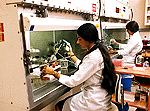

|

The agri-food industry employs one in five Canadians and contributes $60 billion to the GDP annually. Food careers cover a wide array of jobs from production, through processing into distribution and marketing. Even the employee who stacks the shelves of your local grocery store is part of the food industry. The following list has been put together by the Institute of Food Science & Technology of the United Kingdom to show broad classes of career opportunities.
Locations where Food Science & Technology is Practised
- Food manufacturing industries (products for consumers)
- Food ingredients manufacture (for supply to food manufacturers)
- Food plant and equipment manufacture
- Food packaging manufacture
- Retail food distribution
- Catering (food service)
- Government -- administration
- Government -- food legislation
- Government -- food science
- Enforcement -- public analysts' laboratories
- Enforcement -- environmental health departments
- Enforcement -- trading standards departments
- Journalism/publishing/information services
- Research institutions and associations
- Educational establishments
- Overseas locations
- Consultancy
Job Functions in which Food Science & Technology are Essential
- Research
- Product development
- Process development
- Food control
- Plant engineering
- Ingredients technology
- Packaging technology
- Food information science
- Food science/technology teaching
- Food science writing
- Technical sales (e.g. of ingredients, plant, packaging)
Job Functions in which Food Science & Technology are not Essential but may be Very Useful
- General management
- Production supervision
- Production management
- Stock control
- Distribution
- Work study
- Purchasing
- Marketing
- Personnel
- Sales
|